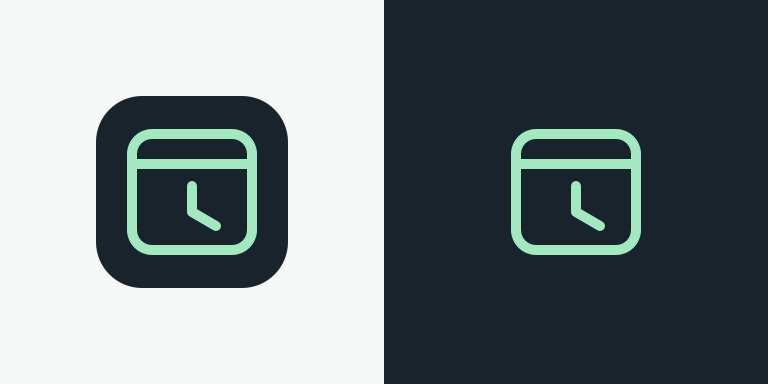
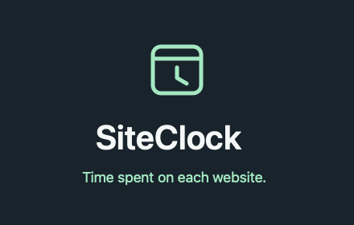
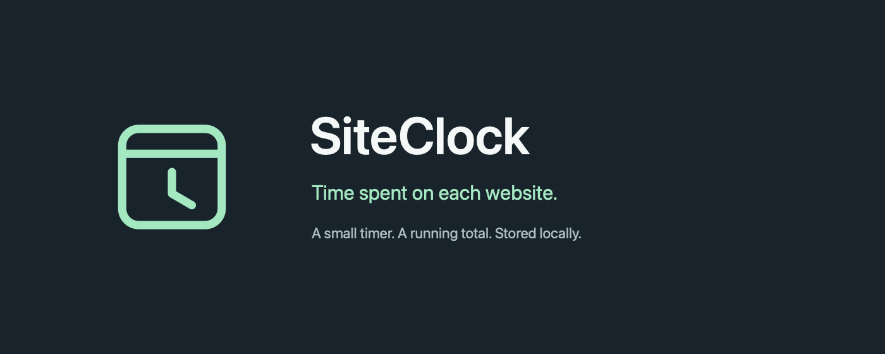
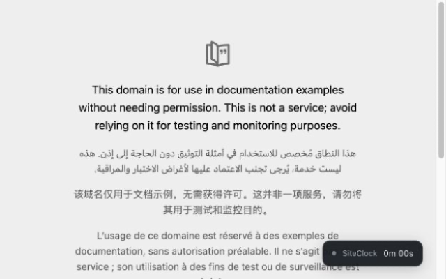
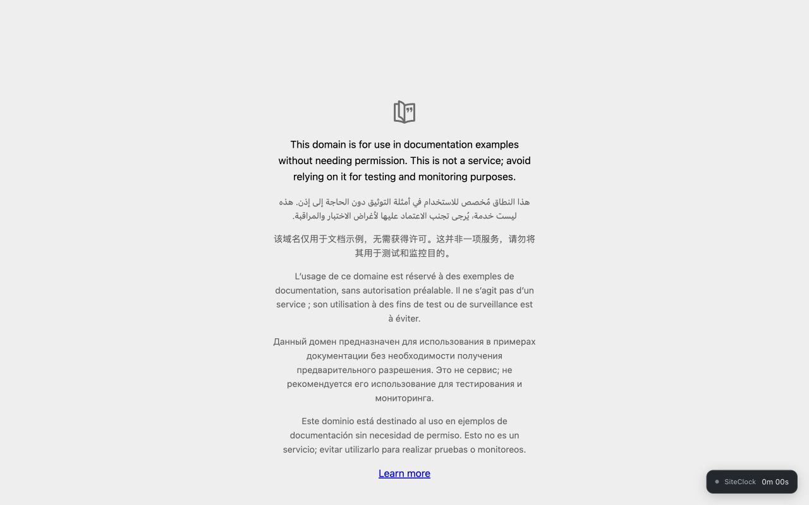

SiteClock
A minimal website timer. Here are the package, artwork, and store copy.
Icon & promotional artwork






Live screenshots
The installed extension on a neutral public page. These are genuine captures, not simulated product UI.




Copy & disclosures
Store listing
Chrome Web Store listing draft
Name
SiteClock
Short description
See your total time on each website in a small on-page timer. All data stays on your computer.
Detailed description
SiteClock keeps a running total of the time you spend on each website and shows it in a small timer in the corner of the page.
The total carries across pages and visits. Open the toolbar popup to see your website totals, sorted by time spent.
- Counts the selected tab in the focused Chrome window.
- Pauses when Chrome loses focus, your computer locks, or you have been inactive for 30 minutes.
- Keeps totals across browser and computer restarts, with no daily reset.
- Stores data on this computer. No account, syncing, ads, or analytics.
- Groups pages by hostname, ignoring a leading www. Other subdomains are separate.
The first 30 minutes without input are counted before the inactivity pause. Incognito browsing is not tracked. Chrome's internal pages and other protected pages cannot show the timer. Sleep, delayed timers, and sudden shutdowns can cause small amounts of time to go uncounted.
Removing SiteClock from Chrome deletes its saved totals.
Listing fields
- Category: Productivity (choose the corresponding category in the dashboard).
- Language: English.
- Homepage: https://github.com/raymondethan/siteclock
- Support: https://github.com/raymondethan/siteclock/issues
- Privacy policy: https://github.com/raymondethan/siteclock/blob/master/PRIVACY.md
- Price: Free.
Store images
- Store icon:
icons/icon-128.png. - Required small promotional tile:
store/assets/promo-small-440x280.png. - Optional marquee:
store/assets/promo-marquee-1400x560.png. - Screenshot files and their capture notes are described in
store/REVIEW.md.
Single purpose
Track cumulative active browsing time per website and display it in an on-page timer and a toolbar list of website totals.
Review testing instructions
Install SiteClock and open an ordinary HTTP or HTTPS website. A small timer appears at the bottom right. Spend a few seconds there, switch to a second website, and return: the first site's timer continues from its existing total. Open the SiteClock toolbar popup to see both totals. Switch to another app to pause counting. Restart Chrome and revisit the website to confirm its saved total remains. No login or test account is needed.
Privacy policy
SiteClock Privacy Policy
Last updated: October 17, 2026
SiteClock shows your cumulative active browsing time for each website. Your website totals stay in your Chrome profile on this computer. SiteClock has no account system, analytics service, or server receiving your browsing data.
Information used
SiteClock uses the current tab's URL to determine its hostname, such as example.com. It uses tab and window state and Chrome's active, idle, and locked signals to decide when to count time. It does not record your keystrokes, mouse movements, or clicks.
Chrome may provide tab metadata, including full URLs and titles, while the extension is running. SiteClock uses this information only in memory to identify the active website. It does not persist URL paths, query strings, page titles, or the contents of web pages, forms, passwords, or cookies.
SiteClock stores the following locally:
- Each website's hostname and cumulative active time in milliseconds.
- The last accounting timestamp, active hostname, and tab identifier needed to avoid counting an interval twice.
- A random browser-session identifier used to distinguish a background-worker restart from a full browser restart. It is not sent anywhere or used to identify you across devices.
How information is used
This information is used only to calculate, save, and display your website timers and totals. A leading www. is removed from hostnames; other subdomains have separate totals. Incognito browsing is not tracked.
Storage, retention, and access
Website totals are saved using Chrome's extension-local storage. They have no automatic expiration and remain across browser and computer restarts. Temporary browser-session state is cleared when Chrome ends or reloads the extension.
You can view your saved website totals by opening the SiteClock toolbar popup. People and software with access to your Chrome profile or computer may also be able to access this local data. SiteClock does not add its own encryption layer.
Sharing and transmission
SiteClock does not send browsing data or website totals to its developer or to third parties. It does not sell data, use it for advertising, synchronize it between devices, or include third-party analytics. Its runtime makes no network requests.
SiteClock follows the Chrome Web Store User Data Policy, including its Limited Use requirements. Browsing information is used solely to provide the website timer and totals, and is not used for advertising or unrelated purposes.
Your controls and deletion
Disable SiteClock in Chrome's extension settings to stop tracking. Disabling it keeps existing totals. Removing SiteClock from Chrome deletes its extension-local data, including all saved totals. SiteClock cannot recover deleted totals.
Policy changes
If SiteClock's handling of data changes, this policy and its last-updated date will be updated with the corresponding release.
Contact
For questions about this policy, open an issue in the SiteClock project. Issues are public; please do not include your browsing history or other private information in a report.
Dashboard privacy answers
Chrome Web Store privacy fields — draft for review
These answers describe the current packaged extension. They are prepared for the publisher to review and enter in the developer dashboard; nothing is submitted. Use the exact field labels presented by the current dashboard.
Single purpose
Track cumulative active browsing time per website and display it in an on-page timer and a toolbar list of website totals.
Permission justifications
storage
Save hostname-to-duration totals and accounting checkpoints on this computer so totals persist across visits and browser restarts. Session storage distinguishes worker restarts from browser restarts. No data is synchronized or transmitted.
tabs
Identify the hostname of the selected tab and detect tab switches, navigation, and closures so elapsed time is assigned to the correct website. Full URLs and other browser-provided tab metadata are transient; only hostnames and accounting metadata are persisted.
idle
Pause timing when Chrome reports that the machine is locked or has received no user input for 30 minutes, and resume when it becomes active. SiteClock does not record individual keystrokes, mouse movements, or clicks.
alarms
Periodically reconcile the active window, selected tab, and idle state if an event was missed or the background worker restarted. This keeps the timer aligned with the current browser state.
Website access / content script matches
HTTP and HTTPS content scripts display the timer automatically on the websites the user visits and send periodic checkpoints to the background worker. Broad website access supports timing arbitrary websites, which is the extension's single purpose. The scripts do not inspect page text or form contents. No script runs in subframes; incognito tracking is disabled.
Remote code
No, this extension does not use remote code. All JavaScript, styles, and icons are included in the package. There are no runtime network requests, external script libraries, or dynamically downloaded executable code.
Data-type disclosures
Disclose local processing as well as transmission; do not claim that the extension handles no user data just because it has no server.
- Web history / web browsing activity: Yes. The extension processes tab URLs to identify hostnames and retains hostname totals locally. It does not retain visited URL paths, query strings, or page titles.
- User activity: Yes. The extension measures active browsing duration and uses window focus and Chrome's active/idle/locked state. It does not log individual clicks, mouse movements, or keystrokes.
- Other listed categories: not handled by the current functionality. The extension does not intentionally access website content, messages, payment details, authentication data, health data, or precise location.
Limited Use certifications
The current implementation supports the following statements:
- Data is not sold or transferred to third parties.
- Data is used only for the stated website-timing purpose.
- Data is not used to assess creditworthiness or for lending.
- Browsing data is not used for advertising or unrelated profiling.
Privacy policy URL
Use https://github.com/raymondethan/siteclock/blob/master/PRIVACY.md. The same policy is available as a standalone HTML source in store/privacy-policy.html if a dedicated hosted page is wanted later.
References checked
- https://developer.chrome.com/docs/webstore/cws-dashboard-privacy
- https://developer.chrome.com/docs/webstore/program-policies/user-data-faq
- https://developer.chrome.com/docs/webstore/images
- https://developer.chrome.com/docs/webstore/prepare
The ZIP contains only production files and PNG icons. The policy is hosted in the public repository. The store submission is pending; see SUBMISSION.md for account and dashboard steps.